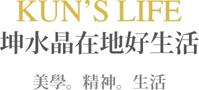
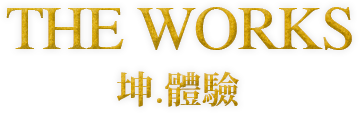
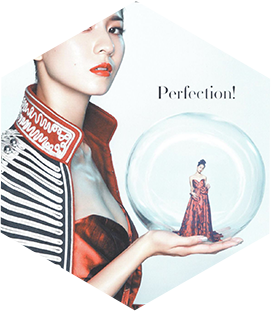

坤水晶以對琉璃的熱愛為起點，堅持20年至品牌形象的穩固建立，憑藉著是對品質與在地的堅持。2013年更開設了獨樹一幟的松菸文創園區玻璃工坊旗艦店，成為台灣極具代表性的玻璃吹製體驗及各國觀光遊客首選。
To the love of glass as a starting point, adhere to 20 years to build a solid brand image, by virtue of the quality and the insistence on the ground. In 2013, it opened a unique flagship store of the Songyan Glass Culture and Crafts Park. It became the most representative glass blowing experience in Taiwan and the first choice for tourists from all over the world.
-

在琉璃產業因成本而紛紛外移的考驗下，坤水晶仍秉持「根留台灣的理念，堅持創作、研發、生產100%MIT，再將品牌觸角延伸至國外。
In the glass industry because of the cost of the test have been relocated, still uphold the "root to stay in Taiwan's philosophy, adhere to the creation, research and development, production 100% MIT, and then extend the brand tentacles to foreign countries. -

以傳統吹製玻璃技法，帶領體驗者使用不同工具塑型。將如同麥芽糖的玻璃膏吹製成型，了解玻璃容器的製成。
The traditional blown glass technique leads the experimenter to use different tools to mold. The glass paste was blown and shaped like a maltose to understand the glass container. -
琉璃工法脫蠟鑄造需經繁複的製程才能展現出作品的精神樣貌，每一道程序更是以手工精雕細磨與高溫淬煉而成，每一項都是極高的技術與藝術表現。
Glasswork method Dewaxing casting process by the need to show the complexity of the work of the spirit of the appearance, each program is hand-carved fine grinding and high-temperature quenching and refining, each one is extremely high technology and artistic expression. -

坤水晶精選年度熱銷產品及送禮首選。
Featured annual top ten best-selling products and gifts. -
-

坤水晶以對琉璃的熱愛為起點，堅持20年至品牌形象的穩固建立，藉著是對品質與在地的堅持。 2013年更開設了獨樹一幟的松菸文創園區玻璃工坊旗艦店， 成為台灣極具代表性的玻璃吹製體驗及各國觀光遊客首選。
To the love of glass as a starting point, adhere to 20 years to build a solid brand image, by virtue of the quality and the insistence on the ground. In 2013, it opened a unique flagship store of the Songyan Glass Culture and Crafts Park. It became the most representative glass blowing experience in Taiwan and the first choice for tourists from all over the world.